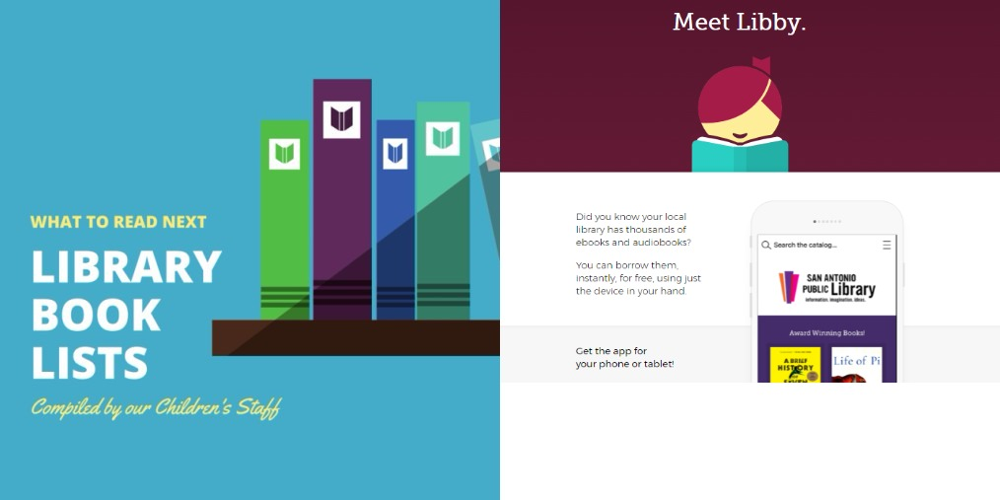

READ.WATCH.LISTEN
Are you looking for something new to read, watch, or listen to, but can’t decide? Ask us! Just like you, our staff have unique interests. Click on each image to decide whose interests are similar to yours, and they’ll create a personalized suggestion list for you.@PPLMayWeSuggest for additional reading, watching, and listening suggestions.

NEWSLATTERS
Get the book recommendations and library news that you want -- right in your inbox! Our electronic newsletters are genre- and topic-specific, providing information about items in our collection, library programs, library news, and local cultural activities related to the newsletter topic. Subscribers are able to manage their own newsletter subscriptions, signing up for as many as desired and changing their preferences at any time.
GUEST LIBRARY
Every three months, we invite a member of the public to serve a three-month term volunteering as our Guest Librarian. Engaged, connected, and committed to community, our Guest Librarians will bring fresh ideas to us, and act as library ambassadors in their neighbourhoods.